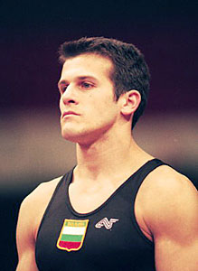

Jordan Jovtchev (BUL)
2001 and 2003 FX and R World
Champion
2000 and 2004 Olympic FX Bronze Medalist
2002 European AA Silver Medalist
1999 World AA Bronze Medalist

Medal Total
Olympic Games: 1
Silver, 3 Bronze
World Championships: 4 Gold, 2 Silver, 4 Bronze
European Championships: 1 Gold, 4 Silver
World Cup: 2 Silver
Jordan Jovtchev was born on February 24, 1973 in Plovdiv. He was voted Bulgaria's "Athlete of the Year" in 2003. Jordan and his wife, Boriana, live in Houston and have a son, Jordan Jr. who was born in December 2001.
Competition Results
1991
Jr. Balkan Championships: 4th AA
Jr. European Championships: 4th AA, 2nd PH, 4th PB, 5th FX, 5th R, 5th V
Sofia International: 8th AA
World Championships: 10th Team
World Stars: 14th AA, 8th PB
1992
Balkan Championships: 2nd AA, 3rd PB
European Championships: 21st AA
Intl. Championships of Romania: 5th AA, 2nd FX, 2nd R, 3rd PH
Medico Cup: 3rd AA, 1st R
Messe Cup: 3rd Team, 3rd AA
Olympic Games: 10th Team
Peace Cup: 1st AA
1993
European Cup: 10th AA, 2nd FX, 2nd R, 6th HB
French International: 4th PH
Golden Sands International: 7th AA
Medico Cup: 3dr AA, 1st Fx, 1st R
World Championships: 18th AA
1994
DTB Cup: 2nd R
European Championships: 9th AA, 5th FX
Intl. Championships of Romania: 6th AA, 2nd R, 3rd PB, 6th PH
Swiss Cup: 3rd R
World Championships (Brisbane): 15th AA, 8th R
World Championships (Dortmund): 8th Team (prelims)
1995
Atlanta Gymnastics Invitational (Pre-Olympics): 4th AA
Cottbus International: 2nd FX, 3rd R, 6th V
DTB Cup: 1st FX
European Cup: 4th AA, 3rd FX, 3rd V, 4th R, 6th HB
French International: 12th AA
Golden Sands International: 2nd AA
Hapoel Games: 5th AA
Ostrava International: 2nd AA
World Championships: 21st AA, 3rd R, 6th FX
1996
Cottbus International: 4th R, 7th FX
European Championships: 4th AA, 2nd R
Olympic Games: 6th Team, 17th AA, 4th R
World Championships: 2nd R
1997
European Masters: 2nd Team
1998
European Championships: 10th AA, 5th FX, 5th R
French International: 4th AA, 4th R
1999
American Cup: 3rd AA
World Championships: 3rd AA, 4th R
2000
American Cup: 6th AA
Aussie Haircare Invitational: 4th AA
Copa Gimnastica: 5th AA, 2nd R, 3rd FX, 3rd HB
DTB Cup: 4th FX, 4th R
European Championships: 7th AA, 4th R
Gander Memorial: 3rd AA
Olympic Games: 12th Team, 8th AA, 3rd FX, 3rd R
Swiss Cup: 6th AA
World Cup: 2nd FX, 2nd R, 7th PH
Zenith Tournament: 2nd FX, 2nd R, 2nd HB, 3rd PH
2001
Cottbus International: 2nd FX, 2nd R
French International: 2nd R, 3rd FX
Gander Memorial: 4th AA
Glasgow Grand Prix: 1st R, 2nd FX, 3rd PB
Goodwill Games: 4th AA, 1st FX, 3rd R, 5th HB
Reese's International: 1st AA
Swiss Cup: 2nd AA
World Championships: 3rd AA, 1st FX, 1st R
World Stars: 3rd FX, 3rd R
2002
American Cup: 7th AA
Cottbus International: 1st R, 2nd FX, 3rd PB
DTB Cup: 1st R, 3rd FX
European Championships: 2nd AA, 1st R, 2nd FX
French International: 1st R, 3rd FX
Gander Memorial: 1st AA
Swiss Cup: 2nd AA
World Championships: 2nd R, 3rd FX
2003
American Cup: 8th AA
Cottbus International: 1st R
DTB Cup: 2nd R
French International: 1st FX, 2nd R
Gander Memorial: 2nd AA
NoyNoy Grand Prix: 1st FX, 2nd R
Swiss Cup: 3rd AA
World Championships: 23rd AA, 1st FX, 1st R
Yorkshire Open: 1st AA
2004
European Championships: 2nd FX, 4th R
Gander Memorial: 4th AA, 1st R
Olympic Games: 2nd R, 3rd FX
Siegfried Fischer International: 1st R, 3rd FX
2005
American Cup: 2nd R
This page was created on August
13, 2005 and was last updated on September 10, 2005.
© Gymn Forum